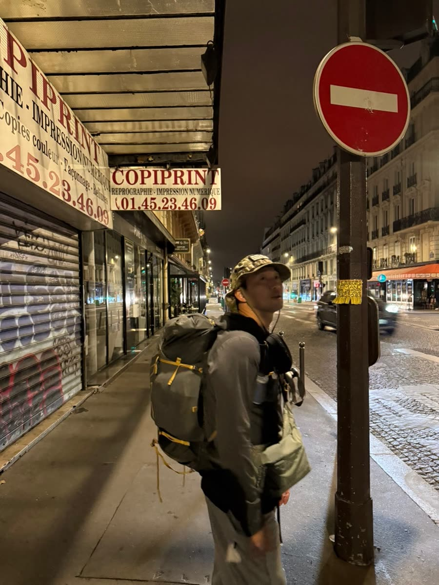
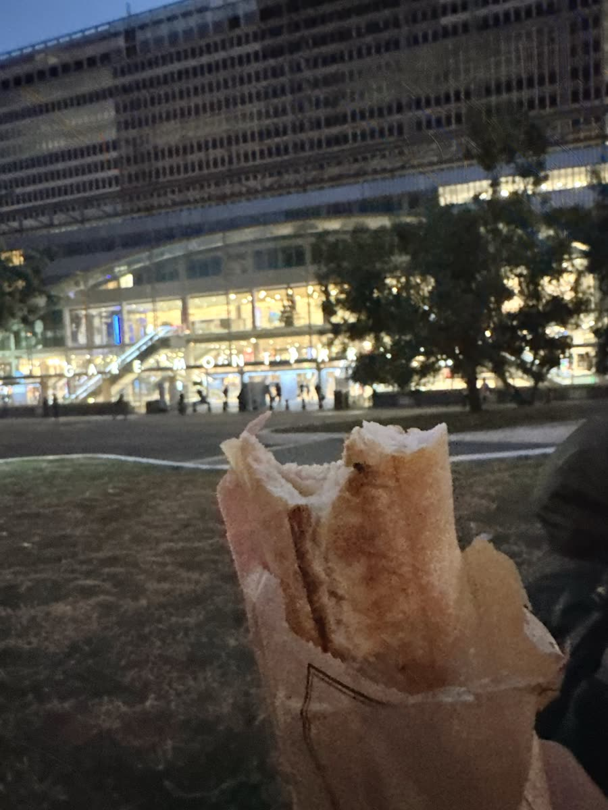
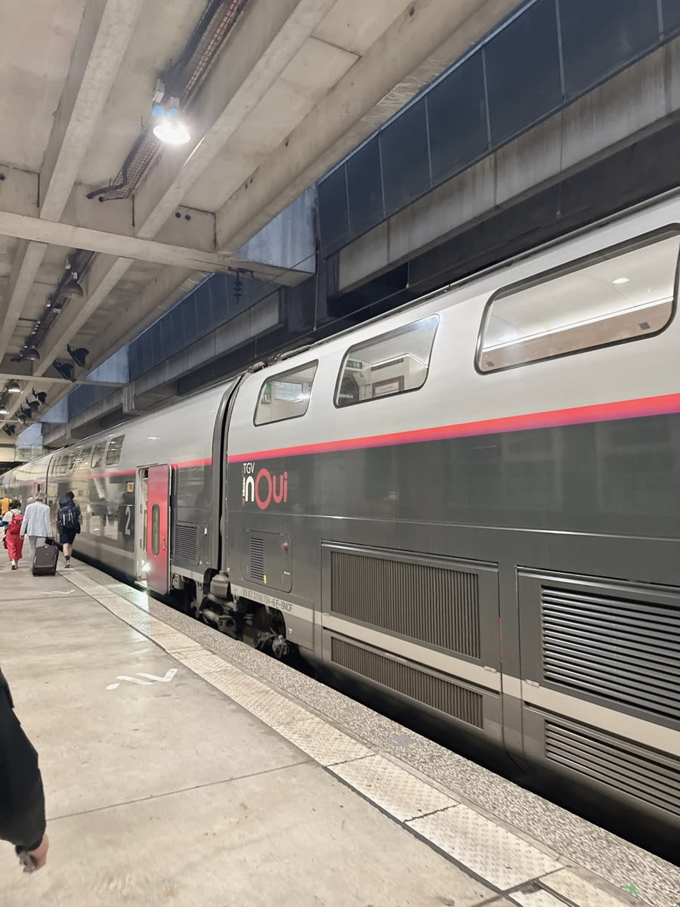
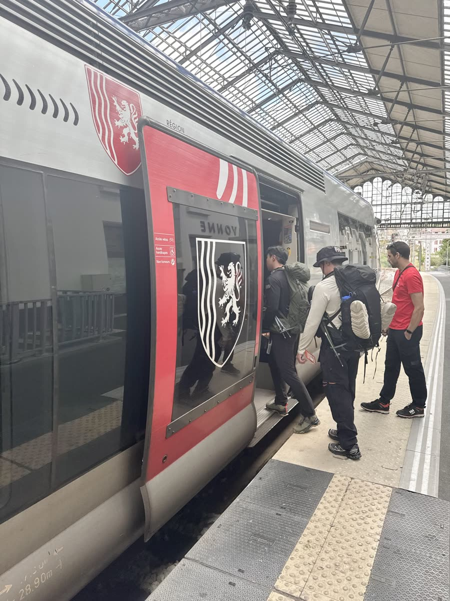
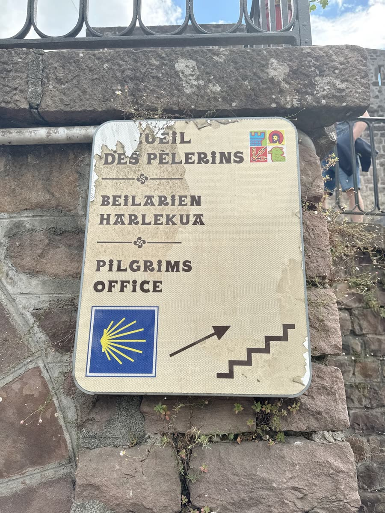
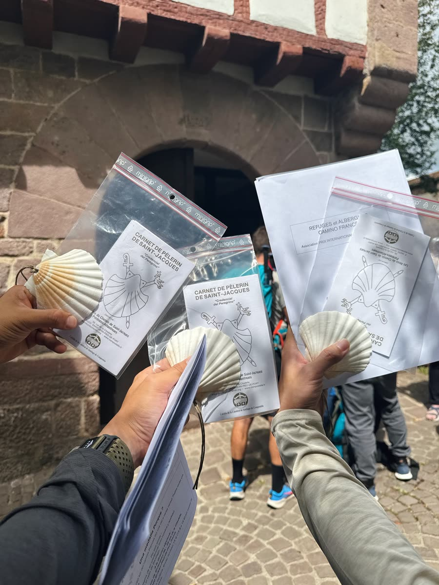
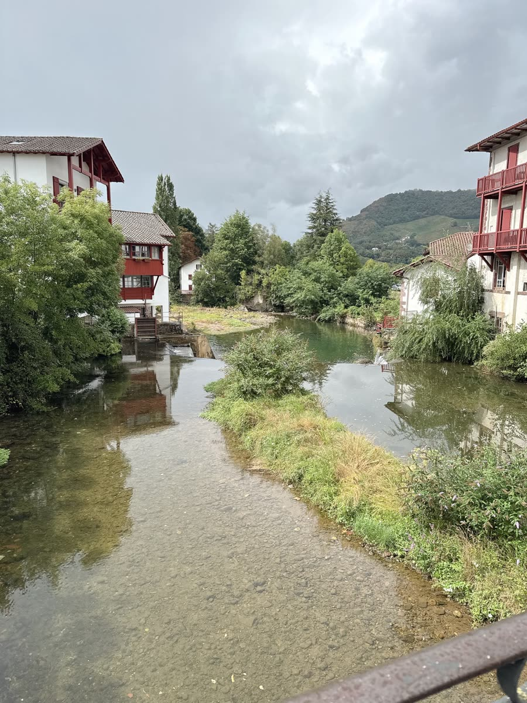
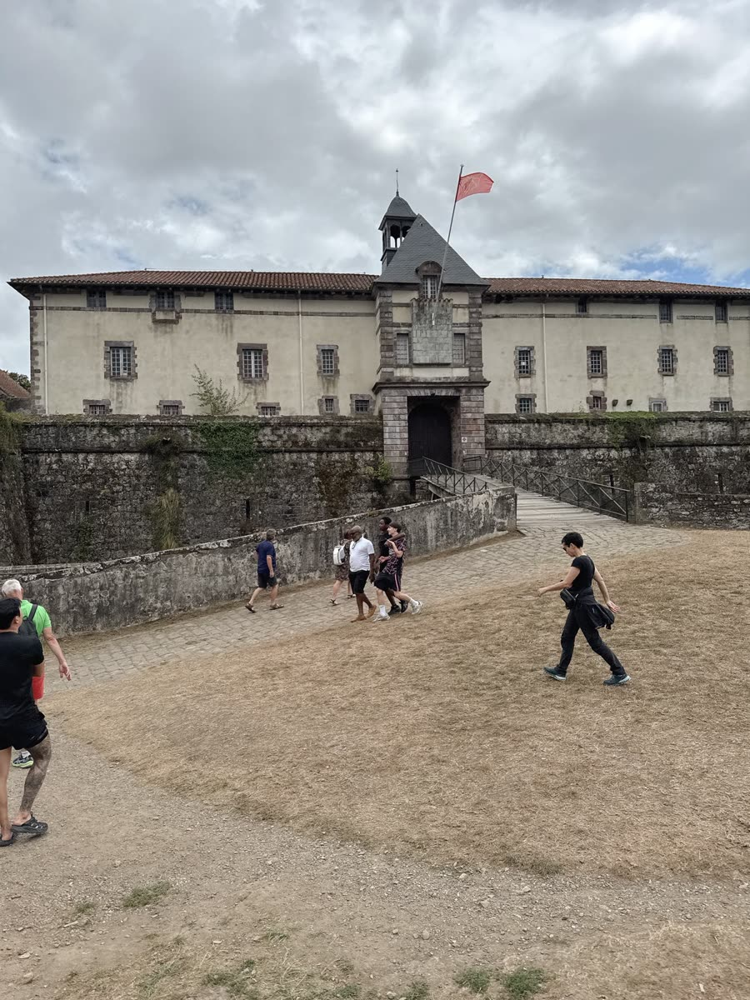
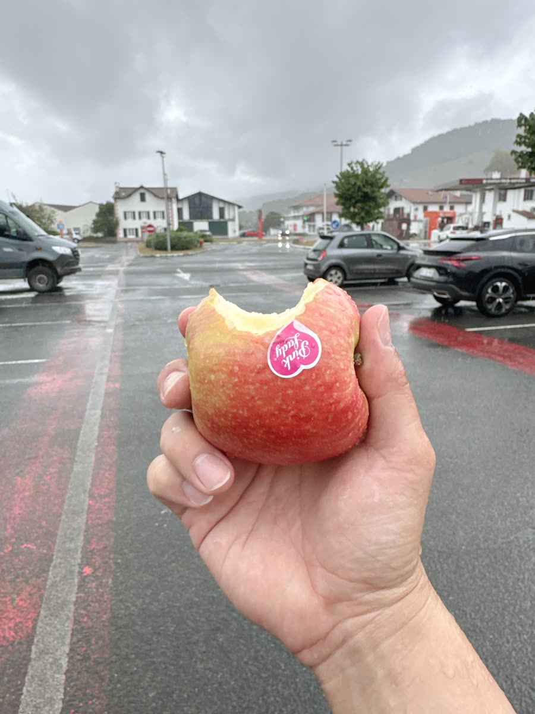

순례자의 한끼한밤
순례자의 한끼한밤새벽엔 파리에 있었는데, 오후엔 순례길 출발점 생장에서 가리비를 받고 있었다.
순례길을 걷기 바로 전날, 파리에서 생장피에드포르까지 간 하루 이야기다. 같은 이야기를 3분짜리 영상으로도 만들었다.
2025년 8월 20일. 새벽 일찍 일어나 샤워를 하고, 셋이 숙소 거울 앞에서 사진을 한 장 찍었다. 새벽 5시, 아직 어두운 파리 거리로 배낭을 메고 나왔다. 이제 순례길 진짜 시작이다, 하면서 신나서 사진을 막 찍었다.

우버를 불러 몽파르나스역으로 갔다. 프랑스 남서쪽으로 가는 고속열차 TGV가 출발하는 역이다. 배가 고파서 역 밖으로 나와, 급히 산 빵을 한 입 베어 물며 긴 하루를 시작했다.

처음 타 본 2층 기차는 그게 그렇게 신기했다. 파리에서 바욘까지는 4시간쯤 걸리는데, 셋이 마주 앉아 웃다 보니 그리 지루하지 않았다. 누군가는 잠깐 잠들기도 했고.

바욘에서는 생장 가는 작은 기차로 갈아타야 한다. 기다리는 동안 역 바로 앞에 나가 잠깐 동네를 구경했다. 그런데 우리를 기다리던 기차가, 빨간색 1칸짜리 작은 기차였다. 순간 이거 제대로 가는 거 맞나 싶어서 웃음이 났다.

파리에서 생장 가는 법
- 1
파리 몽파르나스역 → 바욘: TGV로 약 4시간
- 2
바욘 → 생장피에드포르: 작은 지역 기차(TER)로 약 1시간
- 3
생장역 → 순례자 사무소: 노란 화살표를 따라 걷기
창밖으로 초록 언덕이 이어지더니 드디어 생장에 도착했다. 스페인 국경 가까이에 있는, 순례길 프랑스길의 대표 출발점이다. 역에서 나와 노란 화살표를 따라 순례자 사무소로 걸어갔다.

숙소 체크인까지 시간이 조금 남아서, 먼저 사무소 줄에 섰다. 사무소에서 서류를 쓰고 순례자 여권, 크레덴시알을 받았다. 그리고 순례자의 상징인 가리비 껍데기. 크레덴시알 값을 내고 받은 잔돈을 기부하고, 가리비를 하나씩 받았다. 드디어 순례길이 시작되는구나. 앞으로 어떤 길이 펼쳐질지, 설레는 마음뿐이었다.

체크인하고 나오니 비가 계속 내렸다. 그래도 비를 맞으며 골목의 가게들을 구경했다. 골목의 집들, 강 위의 다리, 시끌벅적한 사람들까지, 모든 게 낯설지만 예뻤다. 마을 위쪽 성채에도 올라가 봤다.


저녁은 피자와 와인. 셋이 꽤 진지한 이야기도 나눴다. 까르푸에 들러 과일을 사서, 빗속에서 사과랑 납작복숭아를 먹었다. 그게 그날의 디저트였다.

같은 방에는 브라질에서 온 커플이 있었다. 그 두 사람, 산티아고까지 무사히 도착했을까. 지금도 가끔 궁금한데, 알 방법은 없다. 파리에서 기차 두 번, 그리고 가리비 하나. 긴 하루였지만, 순례의 시작을 알리는 설레는 하루였다.
영상 챕터
- 0:00
새벽엔 파리, 오후엔 생장
- 0:13
새벽 5시 파리 출발
- 0:47
몽파르나스역 TGV, 바욘까지 4시간
- 1:02
바욘에서 생장 가는 기차 갈아타기
- 1:28
생장 순례자 사무소 크레덴시알·가리비
- 2:05
비 오는 생장피에드포르
- 2:39
같은 방 브라질 커플
- 2:49
파리에서 생장 가는 법 정리
For pilgrims passing by
The day before the Camino: we left Paris at 5 a.m., took a double-decker TGV from Montparnasse to Bayonne (about 4 hours), then a tiny red one-car train to Saint-Jean-Pied-de-Port (about 1 hour). We followed the yellow arrows to the Pilgrim Office, got our credentials, donated our change and each took a scallop shell. Then apples and flat peaches in the rain.
🕯️ 오늘 밤 이야기는 여기까지.
여러분이 순례길에 간다면, 배낭에 제일 먼저 뭘 매달고 싶어요?